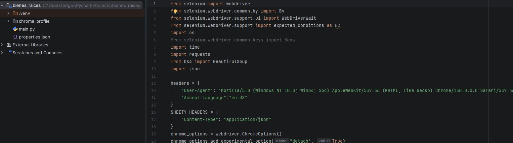
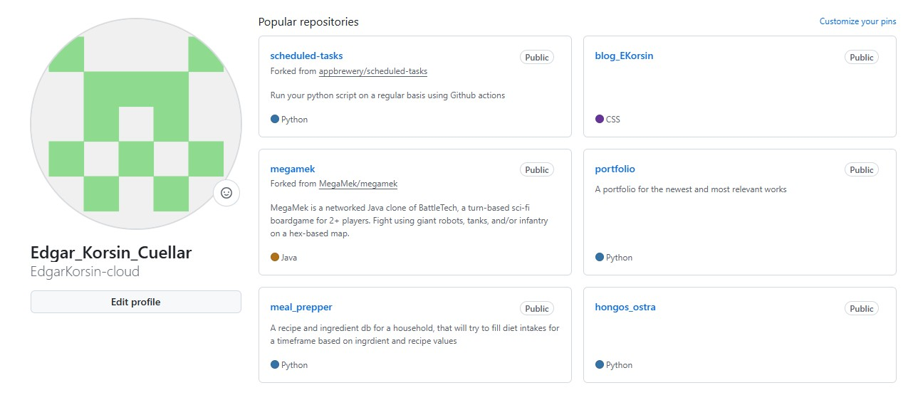

Blog
A blog site, with role defined users, hash and salt passwords, SQL Database for posts
A blog site, with role defined users, hash and salt passwords, SQL Database for posts
A tool created for a FLGS to speed up games of BT Classic, Web service and tkinter app

Helper for home gardening to keep track of crops, Inventory of supplies, times, milestones and a Notifier for Milestones

A simple recipe db for a Nutritionist with REST API to service recipes and the info

Web scrapper for luxury homes in GT city

Multiple projects in progress and experiments
Successful projects require clear communication, strategic planning, and the right methodologies. Bringing extensive experience managing cross-functional remote teams with tools like Jira, Trello, and ClickUp, I ensure your projects are delivered efficiently from kickoff to completion. Let's connect to get started.